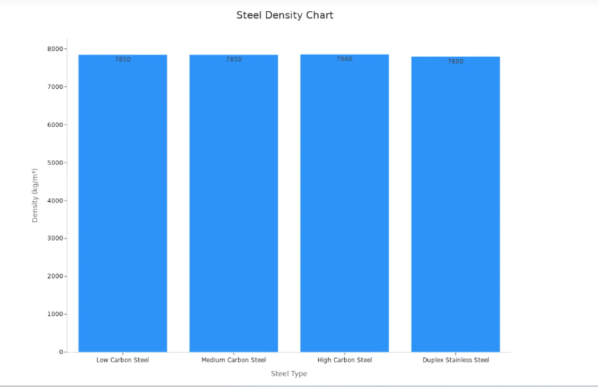
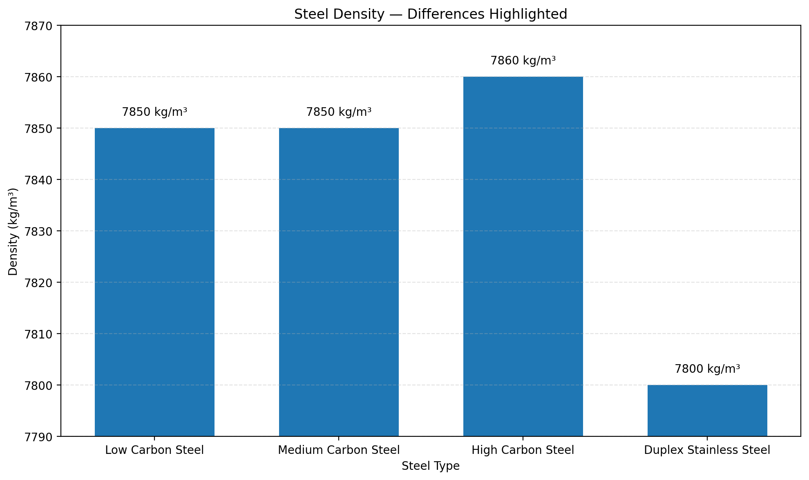

Steel Density Visualization
This assignment compares different types of steel based on their density. The original chart and an improved visualization are shown below.
Original Steel Density Chart
The original chart displays the density of four types of steel. However, because the values are all close to 7,800 kg/m³, the differences between the steel types are difficult to see.

Improved Steel Density Chart
The improved chart uses a narrower vertical axis to highlight the differences between the steel densities. This makes it easier to compare the four steel types.

Comparison
The original chart uses a vertical axis beginning at zero, which makes the four bars appear almost identical. Although the actual densities are slightly different, those differences are difficult to see.
The improved chart adjusts the vertical axis to focus on the range from approximately 7,790 to 7,870 kg/m³. This makes the differences between the steel types much more visible.
The densities shown are:
- Low Carbon Steel: 7,850 kg/m³
- Medium Carbon Steel: 7,850 kg/m³
- High Carbon Steel: 7,860 kg/m³
- Duplex Stainless Steel: 7,800 kg/m³